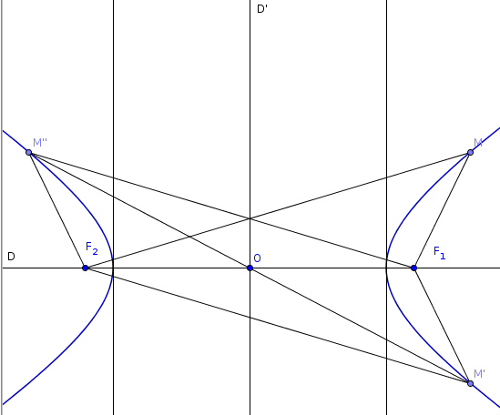

| Choisissez votre langue ! | Choose your language ! |
Suite à l'étude du cours sur les hyperboles 'historiques' et leurs propriétés, on s'intéresse à l'ensemble des points M du plan tels que
|MF1-MF2|=2a où F1 et F2 sont deux points distincts.
Montrer que cet ensemble possède deux axes de symétrie et un centre de symétrie.
Montrer que cet ensemble est constitué de deux parties disjointes.
Montrer que cet ensemble est non borné.
aide
Considérer la droite (F1F2) et la médiatrice de [F1F2].
solution

Si M vérifie |MF1-MF2|=2a , alors il en est de même de son symétrique par rapport à (D1D2) et de son symétrique par rapport à la médiatrice de [F1F2].
Ces deux droites orthogonales sont donc des axes de symétrie de la figure.
Leur intersection, qui est le milieu O du segment [F1F2], est donc un centre de symétrie pour la figure.
L'ensemble ne peut contenir aucun point de la médiatrice de [F1F2], il est donc composé de deux parties disjointes situées respectivement dans le demi-plan x >0 et dans le demi-plan x < 0.
On considère maintenant un repère de centre O et dont l'axe des abscisses est confondu avec la droite (D1D2).
Dans ce repère F1 a pour coordonnées (c,0) et F2(-c,0).
D'après les inégalités triangulaires si l'ensemble des points M vérifiant |MF1-MF2|=2a n'est pas vide on a nécessairement c ≥ a et en fait on peut supposer que c >a sinon l'ensemble se confond avec la droite (D1D2).
Soit maintenant R un nombre réel positif arbitrairement grand.
On désigne par M(θ) le point de coordonnées (Rcos(θ),Rsin(θ)).
On désigne par f(θ) la fonction f(θ)=(M(θ)F2-M(θ)F1)-2a. On a f(0)=2c-2a >0 et f(π/2)=-2a <0.
f est évidemment une comme différence de racines de fonctions continues.
Donc d'après le f s'annule entre 0 et π/2.
Cela signifie qu'il existe un point M(θ1) vérifiant M(θ1F2-M(θ1F1=2a.
Il en résulte que l'ensemble étudié n'est pas borné puisque R est arbitrairement grand.
Following the study of the course on 'historical' hyperbolas and their properties, we are interested in the set of points M of the plane such that
|MF1-MF2|=2a where F1 and F2 are two distinct points.
Show that this set has two axes of symmetry and a center of symmetry.
Show that this set consists of two disjoint parts.
Show that this set is unbounded.
hint
Consider the line (F1F2) and the perpendicular bisector of [F1F2] .
solution
If M verifies |MF1-MF2|=2a , then so does its symmetric with respect to (D1D2) and sound symmetric with respect to the perpendicular bisector of [F1F2].
These two orthogonal straight lines are therefore axes of symmetry of the figure.
Their intersection, which is the midpoint O of the segment [F1F2], is therefore a center of symmetry for the figure.
The set cannot contain any point of the perpendicular bisector of [F1F2], so it is composed of two disjoint parts located respectively in the half-plane x > ;0 and in the half-plane x < 0.
We now consider a frame with center O and whose abscissa axis coincides with the straight line (D1D2).
In this coordinate system F1 has coordinates (c,0) and F2(-c,0).
According to the triangular inequalities, if the set of points M verifying |MF1-MF2|=2a is not empty, we necessarily have c ≥ a and in fact we can assume that c >a otherwise the set merges with the line (D1D2).
Now let R be an arbitrarily large positive real number.
We denote by M(θ) the point of coordinates (Rcos(θ),Rsin(θ)).
We denote by f(θ) the function f(θ)=(M(θ)F2-M(θ)F1)-2a. We have f(0)=2c-2a >0 and f(π/2)=-2a <0.
f is obviously an as difference of roots of continuous functions.
So according to the f vanishes between 0 and π/2.
This means that there is a point M(θ1) satisfying M(θ1)F2-M(θ1)F1=2a.
It follows that the studied set is not bounded since R is arbitrarily large.
|
Création Gilles Dubois - licence CC-BY-SA
Created by Gilles Dubois - licence CC-BY-SA
|
Septembre 2023
September 2023
|
Version mobile Jquery
Mobile Jquery version
|
|